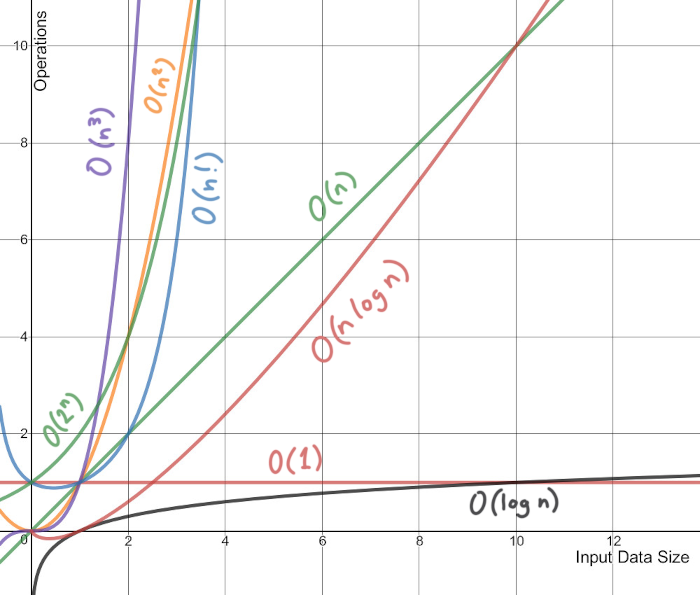

C2-ALGO-02 : Complexité des algorithmes
Contents

C2-ALGO-02 : Complexité des algorithmes#
Objectifs pédagogiques#
Aborder les concepts de meilleur des cas, pire des cas et cas moyen lorsqu’on parle de complexité des algorithmes
mettre en évidence la complexité de certains algorithmes classiques
Définition : Complexité en temps#
La complexité en temps est une mesure du temps que prend un algorithme pour exécuter un certain nombre d’opérations en fonction de la taille de l’entrée de l’algorithme.
La complexité en temps de l’algorithme est donc :
indépendante du langage de programmation dans lequel l’algorithme est écrit
indépendante de la plateforme sur laquelle le programme est exécuté
Par souci de simplicité nous assumerons dans la suite de ce cours que chaque opération coûte le même temps. Ainsi une addition, une multiplication, une affectation, un test conditionnel, etc… coûtent toutes et tous \(1\)
Cette complexité s’exprime par son comportement asymptotique et on utilise pour se faire la notation Grand O notée \(\mathcal O\)
Défintion : Comportement asymptotique#
En mathématiques, la comparaison asymptotique est une méthode qui étudie la vitesse de croissance (ou de décroissance) d’une fonction \(f(n)\).
Une asymptote est une droite dont une courbe s’approche sans jamais l’atteindre.
L’analyse du comportement asymptotique consiste donc à trouver une fonction \(g(n)\) qui exprimerait le comportement de la fonction \(f()\) lorsque n tend vers l’infini. On dit alors que la fonction \(f(n)\) est bornée asymptotiquement par la fonction \(g(n)\) à un facteur près.
La notation devient : \(f(n) = \mathcal O (g(n)\)
Définition exacte mathématique#
La définition rigoreuse mathématique sera explicitée dans un cours de mathématiques. Dans le cadre du cours d’informatique, la recherche du comportement asymptotique se résumera à la recherche - empirique ou non - de la fonction \(g(n)\) qui permet de décrire le comportement de l’algorithme dans le pire des cas
Exemple#
Le graphique suivant décrit la fonction \(f(x) = 1 + \frac{4 (x^2 -1}{x^4}\) (courbe rouge) et la droite asymptotique \(g(x) = 1\) (droite verte). On peut montrer avec l’analyse mathématique que lorsque \(n \to \infty\) alors la fonction \(f(x)\) tend vers \(1\), On l’écrit par la formule : \(\lim_{x \to \infty} f(x) = 1\)

Approches classiques#
Pour trouver la complexité asymptotique des algorithmes, nous nous baserons sur trois approches classiques :
Le meilleur des cas
Le pire des cas
Le cas moyen
Le meilleur des cas#
L’approche de la complexité dans le meilleur des cas (ou le cas le plus favorable) mesure le temps passé par un algorithme lorsque les données d’entrées sont dans le meilleur cas possible.
Exemple : Dans le cas de la recherche linéaire dans une liste triée, le meilleur des cas se rencontre lorsque l’élément à trouver est localisé à la première position.
Le pire des cas#
L’approche de la complexité dans le pire des cas (ou le cas le plus défavorable) mesure le temps passé par un algorithme lorsque les données d’entrées se trouvent dans le pire des cas possibles.
Exemple : Dans le cas de la recherche linéaire dans une liste triée, le pire des cas se rencontre lorsque l’élément à trouver est localisé à la dernière position.
Le cas moyen#
L’approche de la complexité dans le cas moyen mesure le temps passé par un algorithme lorsque les données d’entrées suivent une distribution donnée (généralement une distribution uniforme).
L’objet mathématique distribution et son analyse dépassent largement le cadre de ce cours d’informatique. Une approche empirique consiste à exprimer les données d’entrée de l’algorithme comme une prise en compte de tous les cas possibles selon leur probabilité. Par exemple, on sait que si on tire 6000 fois un dé équilibré, la chance de tomber sur un \(1\) avoisine les \(\frac{1}{6}\) et donc que sur les 6000 tirs, environ 1000 montreront un 1.
Exemple : Dans le cas de la recherche linéaire dans une liste triée, le cas moyen sera celui où l’élément recherché se trouvera à la moitié de la liste.
Classes de complexité#
Classe de complexité \(\mathcal O\) |
Type |
|---|---|
\(\mathcal O(1)\) |
constante |
\(\mathcal O(log(n))\) |
logarithmique |
\(\mathcal O(n)\) |
linéaire |
\(\mathcal O(n log(n))\) |
linéarithmique |
\(\mathcal O(n^2)\) |
quadratique |
\(\mathcal O(n^3)\) |
cubique |
\(\mathcal O(2^n)\) |
exponentiel |
\(\mathcal O(n!)\) |
factoriel |
Exemples de classes de complexité pour certains algorithmes#
Algorithme |
meilleur des cas |
pire des cas |
cas moyen |
|---|---|---|---|
Recherche linéaire |
\(\mathcal O(1)\) |
\(\mathcal O(n)\) |
\(\mathcal O(n)\) |
Recherche dichotomique |
\(\mathcal O(log(n))\) |
\(\mathcal O(log(n))\) |
\(\mathcal O(log(n))\) |
Tri à bulles |
\(\mathcal O(log(n))\) |
\(\mathcal O(log(n^2))\) |
\(\mathcal O(log(n^2))\) |
Tri sélection |
\(\mathcal O(log(n^2))\) |
\(\mathcal O(log(n^2))\) |
\(\mathcal O(log(n^2))\) |
Tri fusion |
\(\mathcal O(log(n log(n)))\) |
\(\mathcal O(n log(n))\) |
\(\mathcal O(n log(n))\) |
Exercices#
Pour chacun des algorithmes suivants, calculez la complexité temporelle dans le meilleur des cas, dans le pire des cas et dans le cas moyen.
On commence par des programmes en Python
def sommeEntiers(n):
somme = 0
for i in range(n+1):
somme += i
return somme
p = sommeEntiers(10)
n = 100
s = 0
for i in range(n):
a = n
while a > 1:
a = a/2
s = s + 1
Voici un algorigramme représentant un algorithme de recherche: